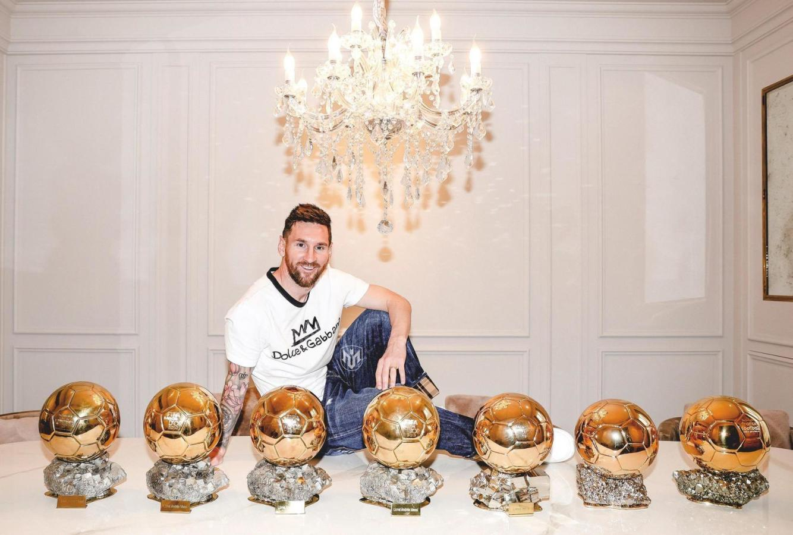

2000-2005:Comenzó la pretemporada 2004-2005 jugando amistosos con el equipo. Contra el Palamós el 20 de julio en el Camp Nou, en el minuto '74, anotó su primer gol.
Participó también en el On Tour Asia.
2005: En junio del 2005, Messi firmó su primer contrato como jugador del equipo, que lo vinculaba con el club hasta 2010 y tenía una cláusula de rescisión de 150 millones de euros, similar a las de Ronaldinho y Samuel Eto'o, jugadores ya establecidos en el plantel.
2005:Debido al interés que había despertado en otros clubes europeos, por su desempeño en el Mundial sub-20 y en el Joan Gamper, el presidente Joan Laporta decidió aumentarle el sueldo y prolongar su contrato.
2006-2007: Se establecio en el cuadro titular y recibió el premio Mejor Jugador Joven, otorgado por FIFPro.
2007:Se convirtió en el primer argentino que recibió el Trofeo Bravo, entregado a los mejores futbolistas menores de veintiún años
2008-2009: Messi recibió el Trofeo Alfredo Di Stéfano, que se otorga al mejor jugador de la primera división española.
2009: Primer balón de Oro
2010-2011:Con 53 goles y 24 asistencias en todo el curso,se convirtió en el máximo goleador de todos los tiempos del Barcelona en una temporada.Por otra parte, con doce tantos, fue el máximo goleador en la Liga de Campeones,
2011: Segundo balón de Oro
2011-2012: una temporada récord- Recibe el premio al mejor jugador de Europa
2012: Tercer balón de Oro.
2013: Cuarto balón de Oro
2016: Quinto balón de Oro
2016-2017: cuarta Bota de Oro
2018-2019: capitanía, décima Liga y sexta Bota de Oro
2019: sexto balón de Oro y Premio Laureus
2021: Septimo balón de Oro
Paris Saint-Germain F. C.
2021-2022: octavo Pichichi y séptimo Balón de Oro

Premios:
A lo largo de su exitosa carrera ganó un total de 53 títulos individuales.